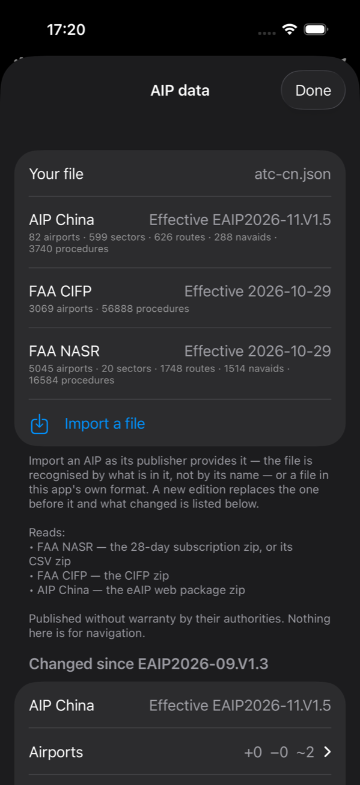

直接导入各国 AIP
除了自己准备 JSON 文件，App 还能直接读取民航部门发布的原始压缩包：你下载下来是什么样，就原样交给它，不用解压，也不用在电脑上转换。这一页说明目前支持哪些文件、去哪里下载、在 App 里怎么导入。


不可用于导航。这些数据只是接收机屏幕上的背景图。各出版物由其发布机构提供，不附带任何保证，并且每 28 天更新一次；任何飞行用途请使用官方发布的现行资料。
目前支持的文件
| 出版物 | 交给 App 的文件 | 大小 | 得到什么 |
|---|---|---|---|
| 美国 FAA NASR | 28DaySubscription_Effective_日期.zip，或其中的 CSV 压缩包 | 约 260 MB（CSV 包约 22 MB） | 机场和频率、导航台、航路、各管制中心的边界和遥控台站频率 |
| 美国 FAA CIFP | CIFP_日期.zip | 约 9 MB | 离场、进场、进近和复飞程序，带高度和速度限制 |
| 中国 AIP（eAIP） | EAIP版本_Web.zip | 约 1.9 GB | 机场和频率、管制扇区（边界、高度、频率、呼号）、飞行情报区边界、航路、导航台、进离场和进近程序、最低扇区高度（MSA）、机场障碍物 |
| 韩国 AIP | AIM_AIP AMDT_期号.zip（“Complete AIP in PDF”） | 约 1.8 GB | 机场和频率、管制扇区、飞行情报区边界、航路、导航台、进离场和进近程序、机场障碍物 |
| 中国香港 AIP（含中国澳门） | aipall.pdf，整本 AIP 一个 PDF | 约 170 MB | 中国香港和澳门机场的频率、中国香港的管制扇区（从 ENR 6.7 扇区图读出区域、终端和进近扇区及各自频率）和飞行情报区边界、航路、导航台、两地的进离场和进近程序（含传统离场）、最低扇区高度（MSA）、中国香港机场的障碍物 |
| 马来西亚 AIP | WM-aip-en-MS.pdf（“Complete AIP in PDF”） | 约 350 MB | 40 个机场和频率、飞行情报区边界、区域管制区、终端区和管制地带、航路、导航台、19 个机场的进离场和进近程序、机场障碍物 |
| 新加坡 AIP | 不是文件，是某一期的网址 | 下载 15 个网页和 95 个 PDF | 新加坡和飞行情报区内印尼机场的频率、管制空域、航路、导航台、进离场和 RNP 进近程序 |
| 中国台湾 AIP（臺北飛航情報區） | 不是文件，是某一期的网址 | 下载约 18 MB 网页和 57 个 PDF | 19 个机场和频率、终端管制区和 C/D/E 类空域、飞行情报区边界、航路、导航台、15 个机场的 RNAV 进离场和 RNP 进近程序、起降航道障碍物 |
靠内容识别，不看文件名。下载后改过名字也没关系：App 打开压缩包，看里面有什么来判断它是哪一种。认不出来的文件会直接告诉你，不会改动已有的数据。
日本的 AIP 正在做，做好后会出现在 App 里 AIP data 页底部的“Reads”清单里，那份清单始终是当前版本实际支持的全部。
去哪里下载
美国：FAA NASR 和 CIFP
美国联邦航空局（FAA）的航行数据是公开的，不需要注册。两份数据各管一部分，可以只导入其中一份，也可以都导入。
- NASR打开 FAA 的 28 Day NASR Subscription 页面，选当前生效的那一期（Current），在页面上下载完整的订阅压缩包
28DaySubscription_Effective_日期.zip。如果想省流量，同一页的 CSV 一节里有单独的 CSV 压缩包，App 同样认得。 - CIFP打开 FAA 的 CIFP 下载页面，下载当前这一期的
CIFP_日期.zip。
只导入 NASR 时，进离场程序只有定位点的先后顺序，没有高度和速度限制，也没有进近程序；再导入 CIFP 后，程序会换成带限制的完整版本。
中国：eAIP
中国民航的电子版 AIP 需要注册后自行下载：到 https://www.eaipchina.cn/e-AIP 注册账号，登录后下载网页版的完整压缩包（文件名形如 EAIP2026-11.V1.5_Web.zip）。
中国 AIP 的版权归中国民用航空局所有，可以免费查阅，但不能再分发。所以 App 不附带它，本手册也不提供下载：由你用自己的账号下载，App 在你的设备上读取，数据不会离开这台设备。
韩国：AIP 的 PDF 完整版
韩国国土交通部的 AIP 公开下载，不需要注册。打开 韩国 AIM 的 AIP 发布历史页面，在当前生效的那一期里点 “Complete AIP in PDF”，下载的是一个形如 AIM_AIP AMDT_12_26.zip 的压缩包。同一页上的网页版（HTML）App 不读，请选 PDF 完整版。
中国香港和澳门：中国香港 AIP
中国香港民航处的 AIP 公开下载，不需要注册，整本就是一个 PDF：https://www.ais.gov.hk/HKAIP/aipall.pdf。这个链接始终指向当前生效的一期。中国澳门国际机场的内容在中国香港 AIP 里也有，导入后两个机场都会出现。
中国台湾：AIP 网页版，导入时填网址
中国台湾民航局的 AIP 公开在网上，不需要注册，但没有整本下载，只有网页版，每一期一个目录。所以导入时不选文件，而是把那一期的网址交给 App：
- 找到要导入的那一期打开 https://ais.caa.gov.tw/eaip/，进入当前生效（或你想要）的那一期，例如 2026-10-29 生效的 AMDT 05/26，地址是
https://ais.caa.gov.tw/eaip/AIRAC%20AIP%20AMDT%2005-26_2026_10_29/index.html。复制浏览器地址栏里的网址，填到index.html或只填到那一期的目录都可以。 - 在 AIP data 页粘贴在 Import a file 下面那一行输入框里粘贴网址，点 Import。App 会从官网下载这一期的 70 个页面，以及各机场程序图后面附的 57 份编码表 PDF（“Aeronautical Data of …”），解析成一个数据库，然后把下载的文件删掉。
可以提前导入已经公布、还没生效的下一期。新一期导入后会替换旧的一期，并列出改了什么。
韩国、中国香港和中国台湾的 AIP 同样受各自发布机构的版权保护，可以查阅，但不能再分发。App 不附带，只在你的设备上读取你自己下载的文件。
马来西亚：AIP 的 PDF 完整版
马来西亚民航局（CAAM）的 AIP 公开下载，不需要注册。打开 马来西亚 eAIP 的发布历史页面，进入当前生效的那一期，下载 “Complete AIP in PDF”，是一个约 350 MB 的 WM-aip-en-MS.pdf。程序的编码表在 PDF 里是图片，要用系统的文字识别逐张读，导入时间较长。
新加坡：AIP 网页版，导入时填网址
新加坡民航局（CAAS）的 AIP 只有网页版，没有整本下载，和中国台湾一样，导入时把那一期的网址交给 App。在新加坡 AIM 网站上进入当前生效的那一期 AIP，复制浏览器地址栏里形如 https://aim-sg.caas.gov.sg/aim-content/uploads/aip/16-NOV-2026/AIP/2026-10-29-000000/html/index-en-GB.html 的网址，在 AIP data 页的输入框里粘贴后点 Import。App 显示的版本是这一期的生效日期（如 29 OCT 2026）；同一个生效日期 CAAS 可能会重新发布几次，内容相同。
马来西亚和新加坡的 AIP 同样受发布机构的版权保护，App 不附带，只在你的设备上读取。
在 App 里导入
- 把压缩包放到 iPhone 或 iPad 上用隔空投送、iCloud 云盘，或者连上电脑后通过“文件”App，放到任何“文件”App 能看到的位置。不用解压。
- 打开 AIP data 页在 ATC 页或 ADS-B 页点右上角的齿轮进入设置，点 AIP data 这一行。
- 点 Import a file，选中压缩包选好之后导入就开始了。

导入过程中

导入时页面上会转圈，并显示正在做的步骤，比如 Airports 12/82（第 12 个机场，共 82 个）、Waypoints 37/78（正在读第 37 个机场的航路点表）、Procedures 30/78 · ZSPD（正在读浦东的程序）。大致用时：
| 文件 | 大致用时 | 为什么 |
|---|---|---|
| FAA NASR | 几秒到十几秒 | 只读其中十几张表 |
| FAA CIFP | 十几秒 | 约 40 万行记录 |
| 中国 eAIP | 一到几分钟 | 程序的编码表在 700 多份 PDF 里，要逐份读 |
| 韩国 AIP | 几分钟 | 每个机场的程序编码表都要从 PDF 里读出来 |
| 中国香港 AIP | 十几分钟到半小时，视设备而定 | 程序编码表（95 张）、最低扇区高度和传统离场在 PDF 里都是图片，要用系统的文字识别逐张读。较新的 iPhone、iPad 快，在 Intel 芯片的 Mac 上约半小时。导入时 App 要保持在前台 |
| 中国台湾 AIP | 五分钟左右 | 要从官网下载 70 个页面和 57 个 PDF，官网比较慢 |
| 马来西亚 AIP | 二十分钟以上 | 2500 多页的 PDF，程序编码表都是图片，要逐张文字识别 |
| 新加坡 AIP | 两分钟左右 | 要从官网下载 15 个页面和 95 个 PDF |
请保持 App 开着，直到导入完成。切到别的 App 或回到桌面后，系统只再给它半分钟左右；超过之后导入会暂停，回到 App 时接着做。不管怎样，旧的数据在新的一版完整建好之前都不会被动到：中途被系统结束，损失的只是这一次导入。
压缩包不会被解压到设备上：App 直接从里面读它需要的那部分。唯一的例外是 NASR 完整包里嵌着的 CSV 小压缩包，会临时取出来，导入结束时删掉。
导入完成后


- 第一次导入：列出各类数据的数量，以及有哪些内容没能读出来和原因。
- 导入新的一期：新的一期整体替换旧的一期，然后逐条比较，列出每一类新增（+）、删除（−）、改动（~）了多少，点开可以看具体是哪些。两期完全一样时会直接告诉你没有变化。
- 下载的文件：读完之后文件就用不着了。如果文件放在 App 自己的文件夹里，数据库建好后 App 会自动把它删掉，不占空间；放在其他位置的，结果下面有一个 Delete … 按钮，App 不会不问就删你自己文件夹里的东西。
- 不想要某份出版物了：点那一行右边的红色垃圾桶，确认后删除。
导入的数据用在哪
- ATC 页：按你的位置列出机场的各个频率，以及覆盖这里的管制扇区的频率。
- ADS-B 页：地图和雷达上的航路、导航台、机场、管制扇区和进离场程序。
一个国家的数据很大，App 不会一次全部读进来，而是看到哪里读到哪里：地图移到哪个区域，就读那个区域的数据。地图拉得很远时只画管制区边界和航路，拉近后才出现机场和程序。
每个地区只保留一份来源。每份出版物、每个 JSON 文件导入后都是一个独立的数据库，按地区区分：中国、中国香港和澳门、中国台湾、韩国、马来西亚、新加坡、美国各是各的，可以同时存在，单独删除。如果要导入的文件和已有的数据是同一个地区，App 会先问你要不要替换，新的数据完整建好之后才会替换旧的。
其他国家：用 JSON 文件
上面那张表以外的国家，App 目前不能直接读它们的 AIP。这不妨碍使用：App 另外规定了一种公开的 JSON 文件格式，任何国家的数据只要整理成这个格式就能导入，和直接导入的出版物同样显示在 ATC 页和 ADS-B 页上。
- 可以只做一部分。文件里的五类内容（机场和频率、导航台、航路、程序、扇区）哪一类都可以留空。只写几个机场的频率就能在 ATC 页用起来，一个机场十几行。
- 数据从哪来：各国的 AIP 一般都能在其民航部门的网站上免费查阅，机场频率在每个机场的 AD 2.18 一节，航路在 ENR 3，导航台在 ENR 4。是否允许再分发因国家而异，自己用通常没有问题，分享给别人之前请先看该国的使用条款。
- 怎么做：航图数据文件一页逐节说明了格式，并附有一份可以直接下载的洛杉矶示例，照着改最快。坐标既可以写十进制度，也可以照航图上的写法写成度分秒。
- 写错了会告诉你：导入时 App 会逐条指出读不懂的地方，一处写错只损失那一处，不会整份文件作废。
JSON 文件和直接导入的出版物可以同时存在，只要地区不同。比如直接导入中国、中国香港和韩国的 AIP，再用一份自己整理的 JSON 补上日本。
各出版物目前读不到的内容
| 出版物 | 没有的内容 | 原因 |
|---|---|---|
| FAA NASR / CIFP | 管制中心以下的扇区边界 | 美国不公布这一层的边界。中心的频率按遥控台站给出，ATC 页列出离你 150 公里以内的台站。 |
| FAA NASR | B、C、D 类空域的形状（只导入 CSV 包时） | 这些形状在完整订阅包里的另一份文件中，只有 CSV 的小包里没有。要的话请导入完整包。 |
| FAA NASR | 私人起降场和直升机场 | 只收有 ICAO 代码或对公众开放的机场，约 5000 个。 |
| 中国 eAIP | 中国香港、中国澳门、中国台湾 | 各有自己的 AIP，不在这份出版物里。中国香港和澳门用上面的中国香港 AIP 导入，中国台湾用中国台湾 AIP 的网址导入。 |
| 中国 eAIP | 个别机场的最低扇区高度（MSA） | MSA 从进近图上读出，82 个机场里读出了绝大多数；邯郸、牡丹江、银川、延吉的画法特殊，没有读出。MSA 只在选中某个机场的某条程序时画出。 |
| 中国、中国香港、韩国、中国台湾、马来西亚 AIP | 2026-11-24 以前导入的数据里没有障碍物 | 障碍物是这之后才加的，用同一份文件重新导入一次即可。 |
| 中国 eAIP、中国香港 AIP | 2026-11-25 以前导入的：中国障碍物位置偏 100–250 米；香港没有雷达扇区 | 之后改为按 AD 2.2 描述的基准点量取障碍物，并读出香港 ENR 6.7 扇区图。重新导入一次即可。 |
| 中国 eAIP | 传统（非 RNAV）进离场和进近程序 | App 读的是程序的数据库编码表，传统程序靠导航台方位和距离定义，没有编码表。 |
| 中国香港 AIP | 终端扇区正上方 FL250 以上归哪个扇区 | ENR 6.7 扇区图在这里没有画分界线，所以不画。澳门进离场扇区图上也没有单独画出，按高度表取西终端扇区 FL120 以下。 |
| 中国香港 AIP | 中国澳门自己的管制频率 | 中国香港 AIP 只列出中国香港管制为中国澳门航班提供的频率；中国澳门塔台、进近等频率在中国澳门 AIP 里。 |
| 中国香港 AIP | 飞行情报区和终端区北边的准确边界 | 这一段公布为“沿领海界线”，没有坐标。先导入中国 AIP 再导入中国香港 AIP，这一段会沿中国的管制扇区画出（近似）；否则飞行情报区的这一段不画，终端区用直线封闭。 |
| 中国香港 AIP | 个别航段的航点 | 编码表在 PDF 里是图片，个别航点名识别不出来，导入结果里会逐条列出，这一段在图上留空。 |
| 中国台湾 AIP | 传统（非 RNAV）进离场和进近程序 | 这些程序只有航图，没有编码表。RNAV 进离场和 RNP 进近已经读入；2026-11-23 之前导入过的，要重新导入一次才有程序。 |
| 中国台湾 AIP | 飞行情报区北边（北纬 29°）和西边（东经 117°30′） | 这两边和中国 AIP 公布的上海、广州飞行情报区重叠，不画；海峡一带的边界以中国 AIP 为准。 |
| 马来西亚 AIP | 个别航段的航点、新山终端区的一段边界 | 程序编码表是图片，个别航点识别不出来，导入结果里会列出；新山终端区有一段圆弧没有公布终点，画成近似。 |
| 新加坡 AIP | ILS/VOR 等传统进近、巴耶利峇的 RNP 进近 | 这些只有航图，没有编码表。还没有障碍物。 |